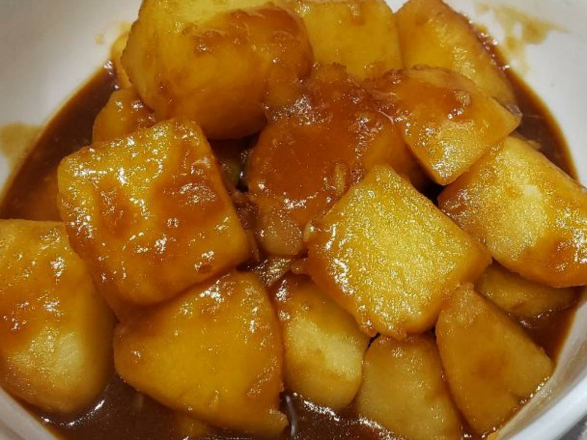

Korean Potatoes

Ingredients
- 2 tablespoons vegtable oil
- 1½ pounds baby potatoes, cut into quarters
- ½ cup water
- 2½ tablespoons low-sodium soy sauce
- 2 tablespoons ketchup
- 2 tablespoons corn syrup
- 1½ tablespoons white sugar
- 1 tablespoon minced garlic
- ⅛ teaspoon red pepper flakes
- 1 teaspoon sesame seeds
Instructions
- Heat oil in a wok over medium-high heat. Add potatoes;
stir-fry until browned in spots and partially cooked through, 5 to 7 minutes.
- While potatoes are cooking, mix water, soy sauce, ketchup, corn syrup, sugar,
garlic, and red pepper flakes together in a bowl.
- Pour soy sauce mixture over potatoes.
Reduce heat and simmer until potatoes are tender and sauce thickens, 6 to 8 minutes.
Sprinkle with sesame seeds and toss to coat.
Back To Top
Homepage